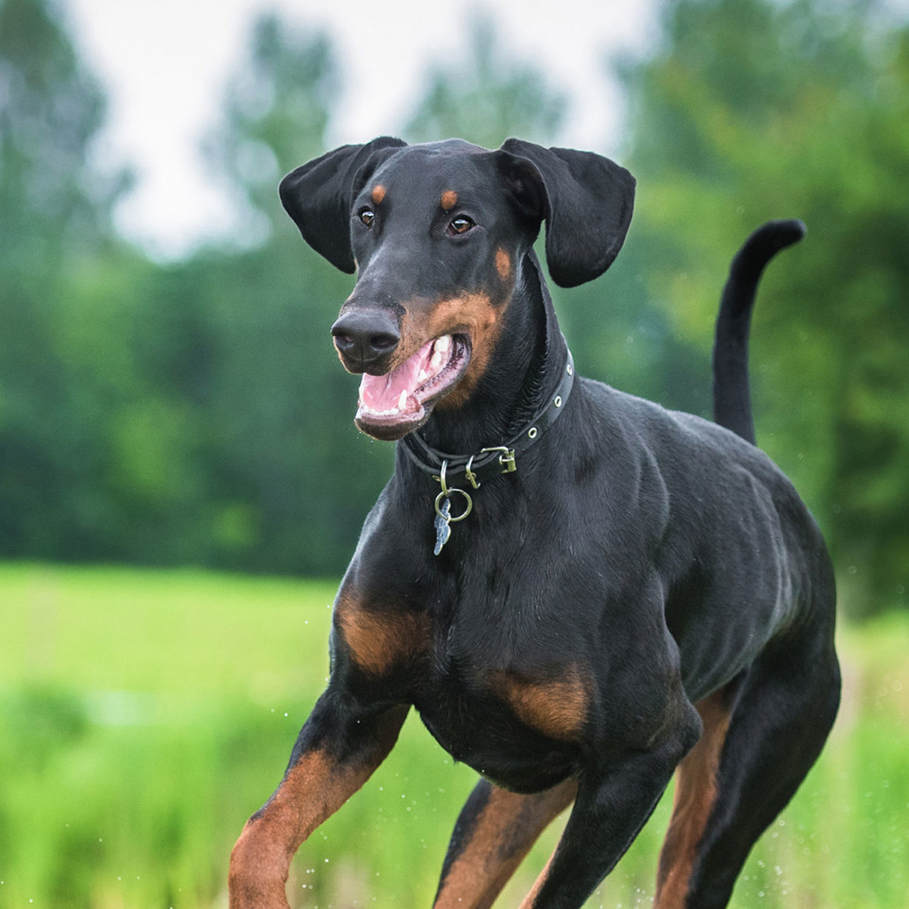

Pastor-Alemão
Cão excepcional, qualificado por alguns como cão por excelência. O Pastor Alemão é corajoso, inteligente, disciplinado e fiel ao dono. Sempre em alerta,este defende-o furiosamente ao menor sinal de perigo. Sua morfologia de trotador lhe permite grande mobilidade e facilita os esforços prolongados. O Pastor Alemão é dotado de excelente faro, passou a ser mestre na arte do rastreamento, tanto para localizar um bandido ou uma criança perdida, como para descobrir alguns miligramas de drogas no fundo de uma mochila.
| Expectativa de Vida | Altura | Peso | |
|---|---|---|---|
| Mínimo | 10 Anos | 55 cm | 22 kg |
| Máximo | 14 Anos | 65 cm | 40 kg |
Dobermann
Aliando qualidades de guardião ao faro de caçador, os primeiros Doberman trabalharam com a policia militares de Thuringe, em seguida nas Forças Armadas, como patrulheiros e guardiões durante a Primeira Guerra Mundial. Ele é temido por aqueles que não o conhecem, estereotipado como altamente agressivo e cruel, mas ele é um guardião formidável que vai defender sua família se perceber algum perigo.
| Expectativa de Vida | Altura | Peso | |
|---|---|---|---|
| Mínimo | 10 Anos | 63 cm | 32 kg |
| Máximo | 13Anos | 42 cm | 45 kg |
Rottweiler
O Rottweiler é muito ativo, tem muita energia para gastar e adora ter a possibilidade de correr em liberdade. Ele é um excelente cão policia e procura ser obediente. Resumindo, ele pode fazer qualquer tarefa que aparecer em sua frente. Rottweilers são territorialistas e não vão permitir que estranhos entrem na sua propriedade, a não ser que os tutores estejam presentes e acolham a pessoa.
| Expectativa de Vida | Altura | Peso | |
|---|---|---|---|
| Mínimo | 8 Anos | 56 cm | 46 kg |
| Máximo | 10 Anos | 68 cm | 50 kg |